Qué significa cada pantalla, cómo se lee la matriz y cómo evaluar a tus médicos, en pocas páginas.
Las imágenes son de la app real, con nombres y cédulas de ejemplo. Los porcentajes de 33% y 66% son los que usa la app hoy; el administrador puede ajustarlos.
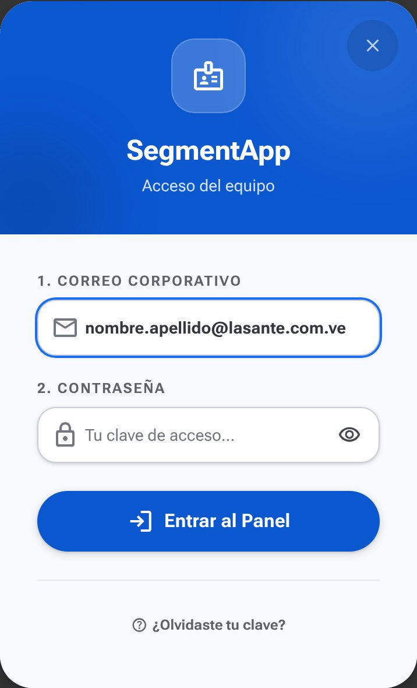
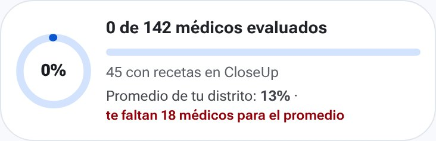
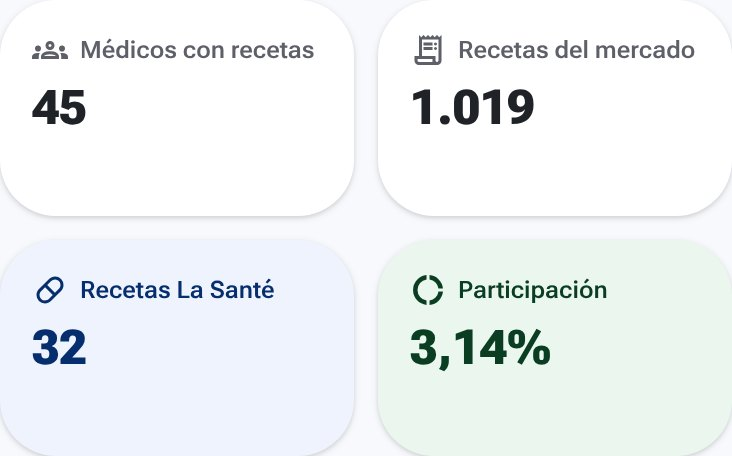
| Indicador | Qué es |
|---|---|
| Médicos con recetas | Tus médicos que tienen recetas en CloseUp. |
| Recetas del mercado | Todas las recetas de tus médicos en los mercados elegidos (de todos los laboratorios). |
| Recetas La Santé | Cuántas de esas recetas son de nuestros productos. |
| Participación | Recetas La Santé ÷ recetas del mercado. Es nuestra porción del mercado. |
Si debajo ves ▲ / ▼, es cuánto subió o bajó frente a la carga anterior de CloseUp.
Los médicos donde más recetas de La Santé puedes ganar. El número verde (+78 Rx) son las recetas de La Santé que le faltan para subir de adopción.
Empieza por los primeros de la lista: son los que más mueven tu número.
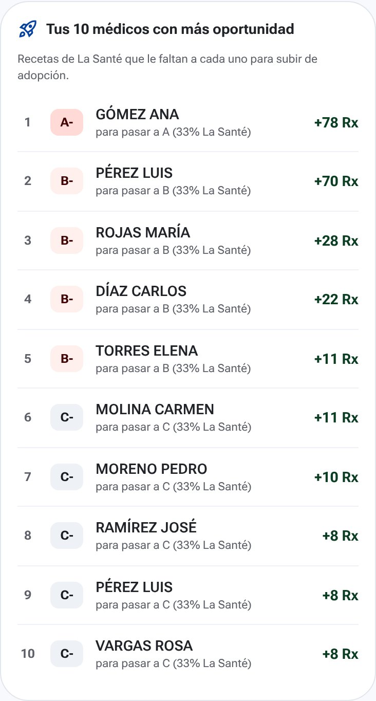
Cada médico cae en una casilla según dos cosas: cuánto receta (la letra) y cuánto receta de La Santé (el signo).
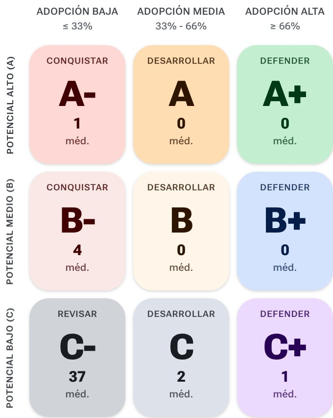
Toca una casilla para ver la lista de esos médicos. Arriba de la matriz puedes elegir un mercado, o cambiar entre CloseUp (recetas reales) y Encuestas (lo que tú evaluaste).
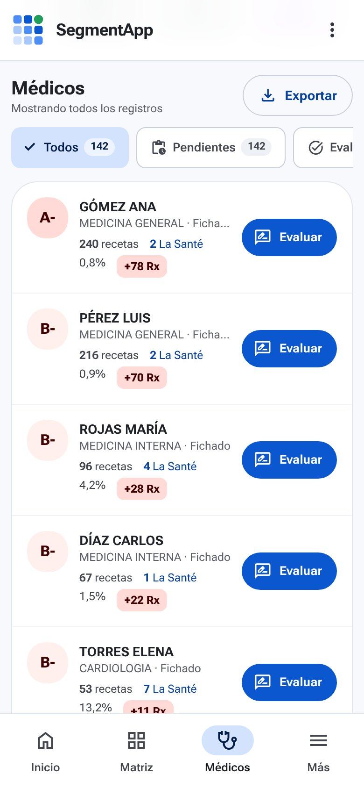
Usa la lupa de arriba para buscar por nombre o matrícula, y el botón de filtros para elegir mercados o productos.
Toca el nombre de un médico para ver todo lo suyo en un solo lugar.
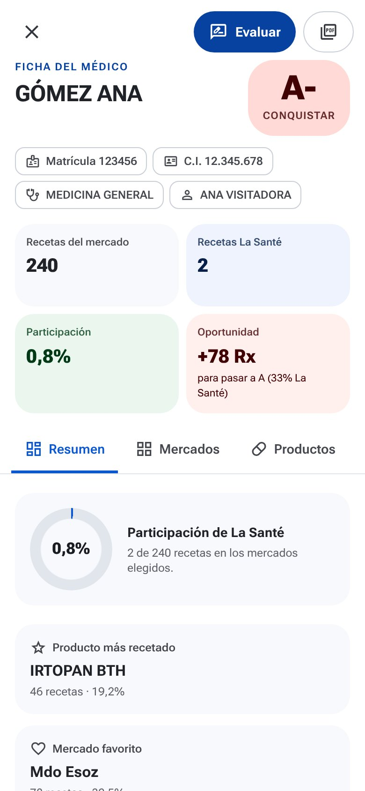
| Resumen | Participación, producto más recetado y mercado favorito. |
| Mercados | Su letra en cada mercado, sus recetas y las de La Santé. Tócalo para ver todos sus productos en ese mercado. |
| Productos | Todo lo que receta, de 10 en 10. En azul, los de La Santé. |
| Historial | Cómo cambiaron sus recetas y tus evaluaciones con el tiempo. |
| Datos del fichero | Lo que dice el CRM: dirección, consultorio, teléfono… |
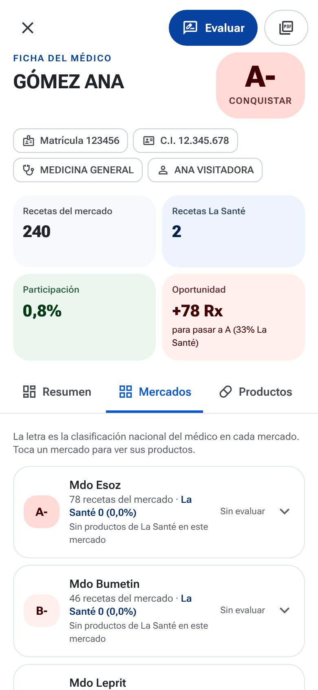
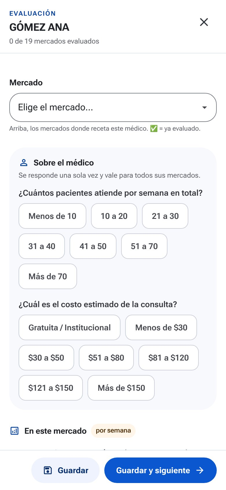
Al llegar una carga nueva de CloseUp, la app compara con la anterior: cuántos médicos mejoraron o bajaron de casilla y en qué mercados ganó o perdió La Santé. Toca "Mejoraron" o "Bajaron" para ver la lista.
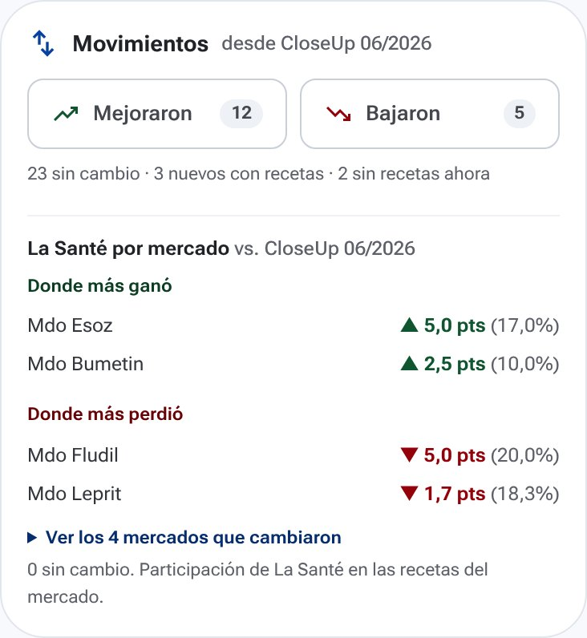
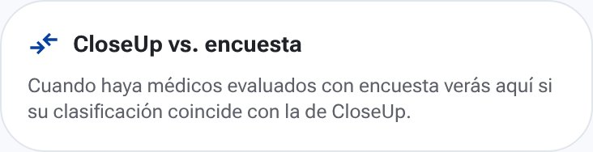
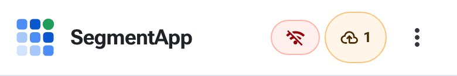
| Rx | Recetas. |
| CloseUp | Auditoría de recetas: cuánto receta cada médico de cada producto. |
| Fichero | Tu lista de médicos asignados (del CRM). |
| Mercado (Mdo) | Grupo de productos que compiten entre sí (ej. Mdo Esoz). |
| Participación | Recetas de La Santé ÷ recetas del mercado. |
| Potencial | La letra A, B o C: cuánto receta el médico. |
| Adopción | El signo −, (nada) o +: cuánto de eso es La Santé. |
| Oportunidad | Recetas de La Santé que le faltan para subir de adopción. |